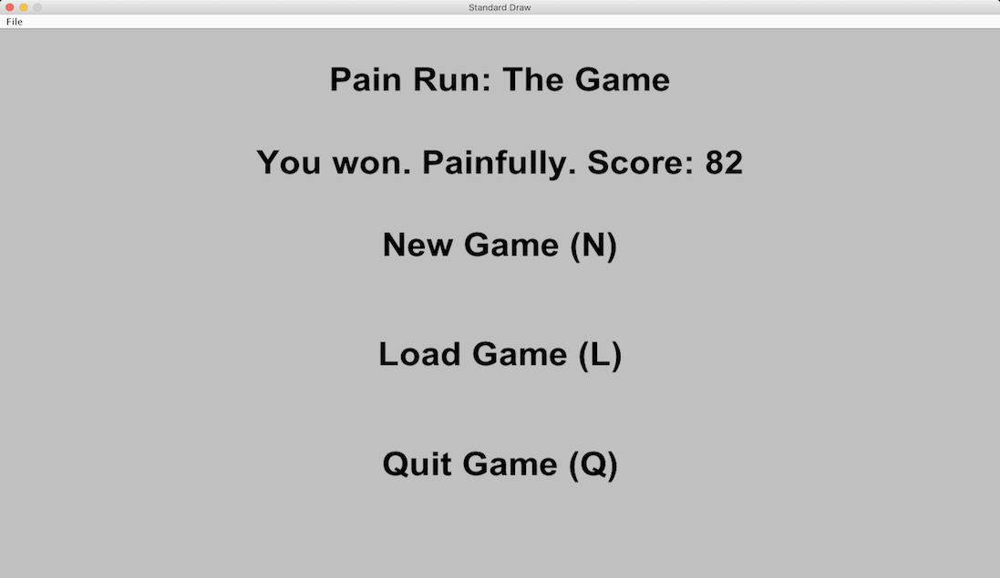
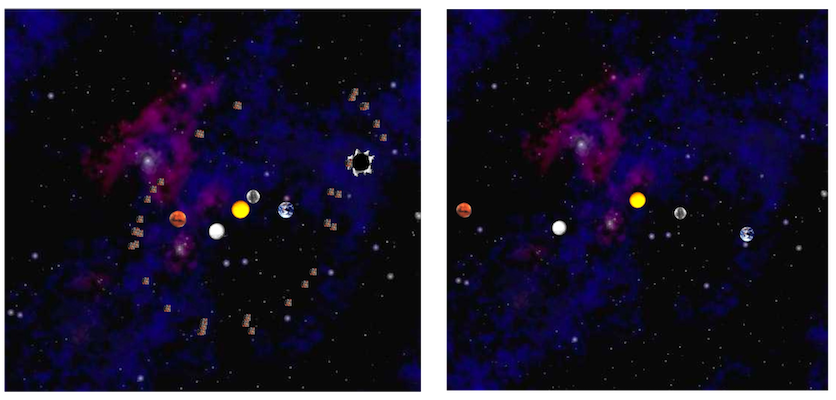

Time Runner Game
March - April, 2018
I implemented the backend of a web server to host a mapping application serving the greater Berkeley area. The application was tile based. Based on user requests, my application would return the appropriate square tiles at the appropriate zoom level to fill the users view. I then wrote code to read in map data from publicly available OpenStreetMap files and construct a graph representation of the streets and locations of Berkeley, as well as their coordinates. I implemented a TrieSet and used it to allow prefix completion for user searches, which would then show the appropriate location on the map. I used Java.
Time Runner Game
January - February, 2018
I created a 2D game in Java, which I called "Time Runner." You can scroll through the image gallery above to get an idea of the graphics and game-play. To start, I wrote a world generation algorithm from scratch. The algorithm would take a user-inputted seed, and generate a 2D tile grid comprised of "floor" and "wall" tiles, which I rendered using the Princeton StdDraw library. My algorithm ensured that every floor tile was reachable for the player, and that world's were random and unique. The player can move up, down, left, or right via keyboard input, and maps included life blocks and other power ups. The game had a home screen, and supported saves. I implemented a heads up display that would give info about a tile if the user hovered their mouse over it. I used the StdDraw and StdRandom libraries to read keyboard input and render the map. Code available upon request.
Universe Simulator
January, 2018
This project was a physics simulator that could display a universe and model the effects of gravity and collisions. The program could read in information about a universe and the objects within by looking through a text file. From there, it would render the objects and show their interactions over time. My simulation accounted for gravitational force, and allowed for inelastic collisions. I used the Princeton StdDraw class to render the objects. Code available upon request.
Scheme Interpreter
November - December, 2017
In my first delve into interpreters, I used Python to implement a fully functional interpreter for the Scheme programming language. Although Scheme is a fairly simple language, it was suprisingly challenging to implement all of its features. I used a read-evaluate-print loop to lex, parse and interpret user input. My interpreter supported proper tail recursion and macros. Boolean logic, functions, lambdas, and conditionals were all supported. I wrote extensive unit tests to verify the correctness of my implementation. Code available upon request.
Ants vs Bees Tower Defense Game
November, 2017
As my second game, I implemented the logic for a tower defense game using Python. I implemented multiple tower (ant) classes and enemy (bee) classes, including long ranged thrower ants, short range one-hit-kill ants, armored ant tanks, and long range de-buff towers with slow, stun, and damage over time effects. This was a large project, and made use of class inheritance. Working on this project taught me the importance of controlling complexity with well thought out code. I was provided with a graphical user interface to accompany the game. Code available upon request.
Restaraunt Map Application
October, 2017
For this project, I used the Python and the Yelp academic dataset to model restaraunts around Berkeley, using their names, locations, categories, prices, and reviews. I then implemented a Yelp-powered restaraunt recommedation program. The program takes a user's location, and returns a centroid corresponding to the cluster of retaraunts nearest to the user's position. I used a k-means algorithim to group restaraunts into clusters. From this cluster, I then used machine learning techniques to predict ratings for the unrated restaraunts based on the user's previous ratings. For the area closest to each centroid, I assigned a color based on the average rating for the restarunts in the cluster, and used this to create a voronoi diagram. Code available upon request.
Hog Dice Game Simulator
October, 2017
For my first game, I worked to implement a simulator for a more complex version of the popular dice game Hog. I used Python to create a dice function that could simulate dice rolls. I then wrote a takeTurn function that could take a set of dice, a game state, and a strategy, and then make a play accordingly. Functions were added as needed so that human players could play against the computer, the computer could play against the computer, and players could play against each other. The simulator provided commentary during games. I was provided with a basic framework and graphical interface to use in my program. I used my simulation to design, test, and develop different strategies for my Hog game. Code available upon request.
Virtual Museum iOS Application
July - August, 2016

This project was my first major computer science project. I stayed at UCI for a month as part of the COSMOS (California State Academy for Math and Science) program. I was part of a 4 member team of high school students tasked with creating an application that could incorporate 3D sound. Essentially, 3D sound allows for the specific placement of sounds within a 3D scene, which can add realism to virtual spaces. Our team decided to develop a virtual museum application, so that people without physical access to traditional museums could instead explore them from their mobile devices. As part of the project, I designed 3D exhibit models and placed them within a 3D scene using Apple's 3D Scenekit. Our app allowed for users to navigate between exhibits and listen to recorded scripts about each exhibit. The 3D sound scene responded to viewing angle using simple linear panning techniques. The project was coded primarily in Swift 2.2 using Xcode, though we also used sound editing software and 3D modeling software. You can view our research paper here.